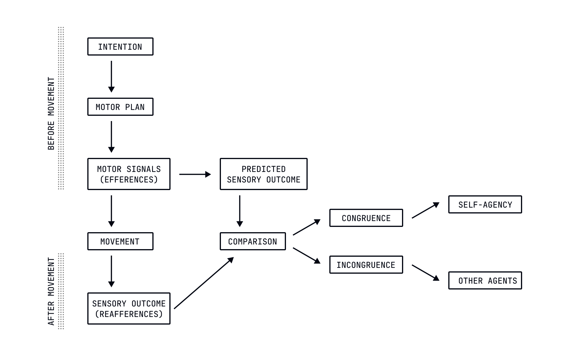
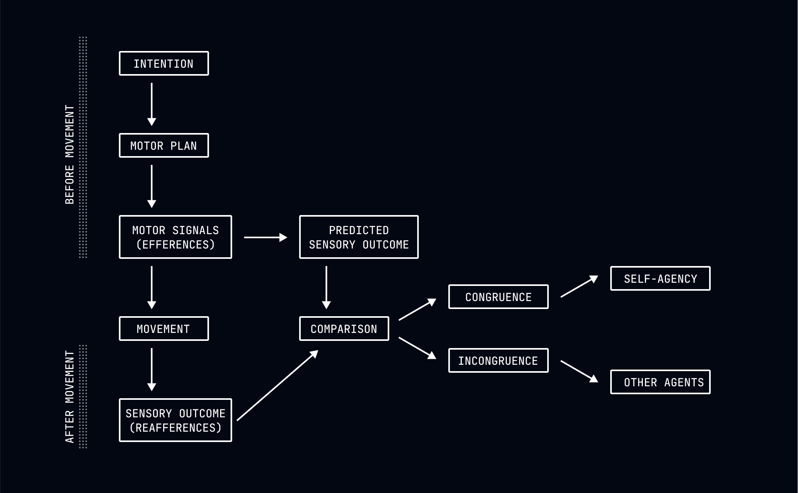

Values, Goals, and the Difference Between Them
Identify patterns in your interests and abilities that reveal your predetermined direction.
Values vs. Goals
You've likely been told to "choose your values carefully" or "decide what matters most to you." This advice assumes you can select your values like items from a menu. This is as misguided as believing you can choose your height.
Your values weren't chosen by you. They emerged from your genetic predispositions, childhood experiences, cultural programming, and life circumstances. The things that consistently generate positive emotional responses in you weren't selected through rational deliberation. They were installed in you by forces outside your control.
The environmentalist didn't choose to care about nature any more than the ambitious executive chose to value achievement.


What to Value When You Can't Choose
Since your values weren't chosen, they can't be created through deliberation. They can only be discovered through observation. Your task isn't to decide what matters to you, but to notice what already does—what consistently generates interest, engagement, satisfaction, or meaning for you.
Look for these patterns:
-
What holds your attention without effort? The activities that naturally absorb you reveal values you didn't choose but inevitably have.
-
What do you find yourself doing when no one is watching? These moments reveal values untainted by social performance.
-
What topics consistently generate strong emotional responses? Your emotional reactions reveal what your system inherently values.
-
When have you felt most alive or fulfilled? These peak experiences reveal your core values in their purest form.
The person who loses track of time when solving technical problems didn't choose to value intellectual challenge. The person who feels most alive when connecting with others didn't choose to value intimacy.
Your Goals Are Downstream of Your Values
If values are predetermined, what about goals? Aren't they freely chosen? No, your goals, like everything else about you, are the inevitable output of your programming encountering specific circumstances. The goals you set are determined by your predetermined values, your beliefs about what's possible, your current circumstances, and social influences.
But here's where things get interesting: while goals aren't freely chosen, they serve a useful function. Goals create the sensation of purpose and direction, which your brain finds rewarding. They focus your attention and energy in ways that can align your environment with your predetermined values.
In other words, goals are useful fictions—not because they represent free choice, but because they help ease teh mental discomfort that can arise from understanding your lack of agency. They create the illusion of control and direction, even though they are ultimately determined by factors outside your control.
The Alignment Problem: Values vs. Goals
The greatest source of suffering in many lives comes from misalignment between predetermined values and conscious goals. This misalignment occurs when you pursue goals that don't actually serve your core values — not because you're choosing poorly, but because you've absorbed goals from external sources without recognizing your inherent values.
Signs of misalignment include:
- Achieving goals but feeling empty afterward.
- Persistent procrastination despite "wanting" to accomplish something.
- Requiring extensive willpower to pursue your goals.
- Feeling relief rather than satisfaction when abandoning projects.
This misalignment isn't a choice—it's the inevitable result of absorbing culturally approved goals that don't match your predetermined values. The person who pursues wealth despite inherently valuing creativity isn't making a bad choice—they're expressing the inevitable confusion that results from their particular programming.
Finding Your Predetermined Direction
Since you can't choose your values or truly choose your goals, what can you do? You can discover the direction you were always going to go by aligning your conscious goals with your predetermined values. This doesn't involve choice in the conventional sense, but rather recognition of what was already there.
To find your predetermined direction:
-
Observe Without Judgment - Watch your natural interests, energy patterns, and emotional responses without trying to change them. Notice what consistently creates positive emotional states regardless of external rewards.
-
Identify Recurring Themes - Look for patterns across different areas of your life and across time. The person who naturally takes charge in work meetings is revealing a predetermined value for leadership, discovered through pattern recognition.
-
Notice Resistance and Flow - Resistance often signals misalignment between conscious goals and predetermined values whereas flow indicates alignment.
-
Set Goals That Serve Your Predetermined Values - Reframing your goals to align with your discovered values can create a sense of purpose and direction and ease the distress of misalignment.
When goals align with predetermined values, motivation becomes less problematic - you can do the things you naturally want to do without the exhausting struggle of trying to force yourself into a mold that doesn't fit.
The Strange Peace of Predetermined Purpose
There's a peculiar tranquility in recognizing that your direction was always determined. When you stop believing you must choose the "right" values or set the "right" goals, you can simply observe what your system naturally values and moves toward.
This doesn't mean passive acceptance of whatever happens. It means active alignment with the values and directions that were always yours.
The Path Forward
As we conclude this first module, you now understand that your past "choices" were inevitable, your regrets are illogical, your patterns reveal your programming, and your values weren't chosen but can be discovered. This understanding doesn't give you free will (nothing could), but it allows you to stop fighting against your predetermined nature and start working with it.
In our next module, "Choosing a Path" we'll begin with "Mapping the Causal Factors" to explore how the causes acting on you can give insight into where they might take you. We'll examine how understanding the forces determining your path can create the useful illusion of control without the exhausting fiction of free will.